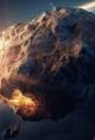

ASTEROIDE
Asteroides são como montanhas flutuantes no espaço! Esses pedaços de rocha e metal orbitam o Sol, principalmente na região conhecida como Cinturão de Asteroides, que fica entre Marte e Júpiter. Embora a maioria dos asteroides seja pequena, alguns podem ter centenas de quilômetros de diâmetro! Eles são restos de material que nunca se juntaram para formar um planeta, o que os torna verdadeiras cápsulas do tempo, oferecendo pistas sobre a origem do nosso sistema solar.
Asteroides são os sobreviventes de um antigo passado cósmico, orbitando o Sol como pequenos planetas rochosos. A maioria deles se encontra no Cinturão de Asteroides, uma área cheia de objetos espaciais entre Marte e Júpiter. Embora possam parecer inofensivos, alguns asteroides passam bem perto da Terra, e cientistas estudam maneiras de desviar os que possam representar perigo. Alguns até acreditam que os asteroides podem conter recursos valiosos, como metais raros, que um dia poderemos minerar. É incrível pensar que essas rochas espaciais guardam segredos sobre a formação do sistema solar!